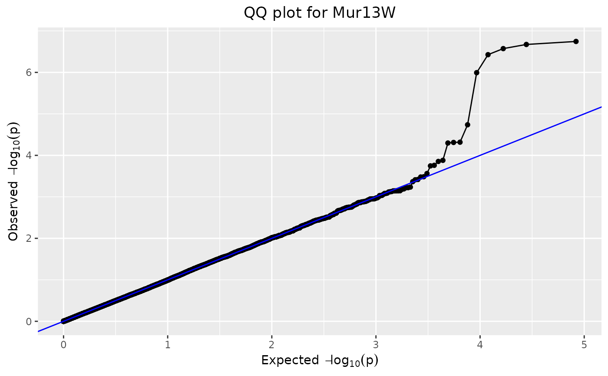
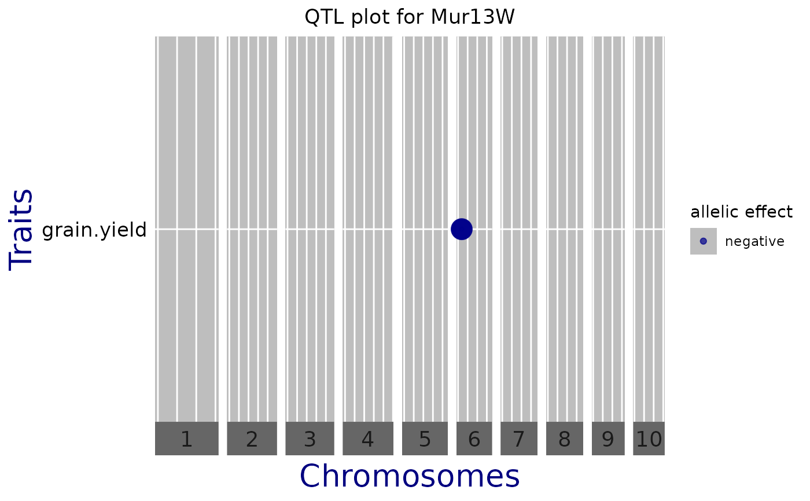
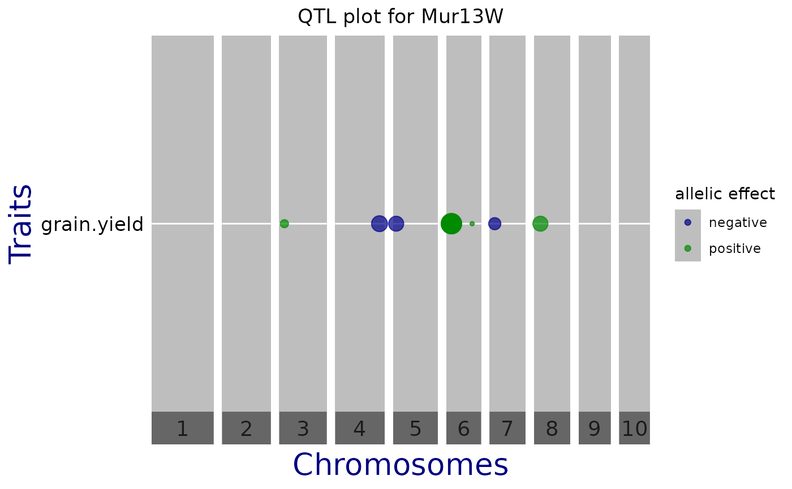

Creates a plot of an object of S3 class GWAS. The following types of
plot can be made:
a manhattan plot, i.e. a plot of LOD-scores per SNP
a QQ plot of observed LOD-scores versus expected LOD-scores
a qtl plot of effect sizes and directions for multiple traits
Manhattan plots and QQ plots are made for a single trait which
should be indicated using the parameter trait. If the analysis was
done for only one trait, it is detected automatically. The qtl plot will plot
all traits analyzed.
See details for a detailed description of the plots and the plot options
specific to the different plots.
Arguments
- x
An object of class
GWAS.- ...
Further arguments to be passed on to the actual plotting functions.
- plotType
A character string indicating the type of plot to be made. One of "manhattan", "qq" and "qtl".
- trial
A character string or numeric index indicating for which trial the plot should be made. If
xonly contains results for one trial,trialmay beNULL.- trait
A character string indicating for which trait the results should be plotted. For
type"qtl" all traits are plotted. Ifxonly contains results for one trait,traitmay beNULL.- title
A character string, the title of the plot.
- output
Should the plot be output to the current device? If
FALSE, only a list of ggplot objects is invisibly returned.
Manhattan Plot
A LOD-profile of all marker positions and corresponding LOD-scores is
plotted. Significant markers are highlighted with red dots. By default these
are taken from the result of the GWAS analysis however the LOD-threshold for
significant parameters may be modified using the parameter yThr. The
threshold is plotted as a horizontal line. If there are previously known
marker effect, false positives and true negatives can also be marked.
Extra parameter options:
xLabA character string, the x-axis label. Default =
"Chromosomes"yLabA character string, the y-axis label. Default =
-log10(p)effectsA character vector, indicating which SNPs correspond to a real (known) effect. Used for determining true/false positives and false negatives. True positives are colored green, false positives orange and false negatives yellow.
colPaletteA color palette used for plotting. Default coloring is done by chromosome, using black and grey.
yThrA numerical value for the LOD-threshold. The value from the GWAS analysis is used as default.
signLwdA numerical value giving the thickness of the points that are false/true positives/negatives. Default = 0.6
lodA positive numerical value. For the SNPs with a LOD-value below this value, only 5% is plotted. The chance of a SNP being plotted is proportional to its LOD-score. This option can be useful when plotting a large number of SNPs. The 5% of SNPs plotted is selected randomly. For reproducible results use set.seed before calling the function.
chrA vector of chromosomes to be plotted. By default, all chromosomes are plotted. Using this option allows restricting the plot to a subset of chromosomes.
startPosA numerical value indicating the start position for the plot. Using this option allows restricting the plot to a part of a selected chromosome. Only used if exactly one chromosome is specified in
chr.endPosA numerical value indicating the end position for the plot. Using this option allows restricting the plot to a part of a selected chromosome. Only used if exactly one chromosome is specified in
chr.
QQ-Plot
From the LOD-scores calculated in the GWAS analysis, a QQ-plot is generated with observed LOD-scores versus expected LOD-scores. Code is adapted from Segura et al. (2012).
QTL Plot
A plot of effect sizes for the significant SNPs found in the GWAS analysis
is created. Each horizontal line contains QTLs of one trait,
phenotypic trait or trial. Optionally, vertical white lines can indicate
chromosome subdivision, genes of interest, known QTL, etc. Circle diameters
are proportional to the absolute value of allelic effect. Colors indicate the
direction of the effect: green when the allele increases the trait value,
and blue when it decreases the value.
Extra parameter options:
normalizeShould the snpEffect be normalized? Default =
FALSEsortDataShould the data be sorted before plotting? Either
FALSE, if no sorting should be done, or a character string indicating the data column to use for sorting. This should be a numerical column. Default =FALSEbinPositionsAn optional data.frame containing at leasts two columns, chr(omosome) and pos(ition). Vertical lines are plotted at those positions. Default =
NULLprintVertGridShould default vertical grid lines be plotted. Default =
TRUEyLabA character string, the y-axis label. Default =
"Traits"yThrA numerical value for the LOD-threshold. The value from the GWAS analysis is used as default.
chrA vector of chromosomes to be plotted. By default all chromosomes are plotted. Using this option this can be restricted to a subset of chromosomes.
exportPptxShould the plot be exported to a .pptx file? Default =
FALSEpptxNameA character string, the name of the .pptx file to which the plot is exported. Ignored if exportPptx =
FALSE.
References
Millet et al. (2016) Genome-wide analysis of yield in Europe: Allelic effects vary with drought and heat scenarios. Plant Physiology, October 2016, Vol. 172, p. 749–764
Segura et al. (2012) An efficient multi-locus mixed-model approach for genome-wide association studies in structured populations. Nature Genetics, June 2012, Vol. 44, p. 825–830.
Examples
## Create a gData object Using the data from the DROPS project.
## See the included vignette for a more extensive description on the steps.
data(dropsMarkers)
data(dropsMap)
data(dropsPheno)
## Add genotypes as row names of dropsMarkers and drop Ind column.
rownames(dropsMarkers) <- dropsMarkers[["Ind"]]
dropsMarkers <- dropsMarkers[colnames(dropsMarkers) != "Ind"]
## Add genotypes as row names of dropsMap.
rownames(dropsMap) <- dropsMap[["SNP.names"]]
## Rename Chomosome and Position columns.
colnames(dropsMap)[match(c("Chromosome", "Position"),
colnames(dropsMap))] <- c("chr", "pos")
## Convert phenotypic data to a list.
dropsPhenoList <- split(x = dropsPheno, f = dropsPheno[["Experiment"]])
## Rename Variety_ID to genotype and select relevant columns.
dropsPhenoList <- lapply(X = dropsPhenoList, FUN = function(trial) {
colnames(trial)[colnames(trial) == "Variety_ID"] <- "genotype"
trial <- trial[c("genotype", "grain.yield", "grain.number", "seed.size",
"anthesis", "silking", "plant.height", "tassel.height",
"ear.height")]
return(trial)
})
## Create gData object.
gDataDrops <- createGData(geno = dropsMarkers, map = dropsMap,
pheno = dropsPhenoList)
## Run single trait GWAS for trait 'grain.yield' for trial Mur13W.
# \donttest{
GWASDrops <- runSingleTraitGwas(gData = gDataDrops,
trials = "Mur13W",
traits = "grain.yield")
## Create a manhattan plot.
plot(GWASDrops)
## Manually set a threshold for significant snps and add a title.
plot(GWASDrops,
yThr = 3.5,
title = "Manhattan plot for Mur13W")
## Restrict plot to part of chr 6.
plot(GWASDrops,
yThr = 3.5,
chr = 6,
startPos = 0,
endPos = 110000000)
## Create a qq plot.
plot(GWASDrops,
plotType = "qq",
title = "QQ plot for Mur13W")

## Create a QTL plot.
plot(GWASDrops,
plotType = "qtl",
title = "QTL plot for Mur13W")

## Manually set a threshold and don't show vertical lines.
plot(GWASDrops,
plotType = "qtl",
yThr = 3.5,
printVertGrid = FALSE,
title = "QTL plot for Mur13W")

# }